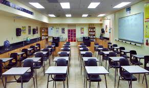

Ilyennek képzelem a jó iskolát
Miért fontos az iskola?
Az iskola az egyik legfontosabb hely az ember életében, hiszen itt nemcsak tanulunk, hanem fejlődünk, barátságokat kötünk, és megtanuljuk, hogyan működik a világ körülöttünk. Egy jó iskola meghatározó szerepet játszik abban, hogy milyen felnőttekké válunk, ezért fontos elképzelni, milyennek is kellene lennie.
Az iskola szerepe röviden:
- alapvető tudást ad a diákoknak
- fejleszti a gondolkodást és a problémamegoldást
- segít a személyiség formálásában
- felkészít a továbbtanulásra és a munkára
- közösségi élményeket és barátságokat nyújt
Barátságos környezet
A jó iskola világos, tiszta és barátságos. Vannak közösségi terek, ahol a diákok beszélgethetnek, pihenhetnek, és együtt gondolkodhatnak. Az osztálytermek rugalmasan berendezhetők: lehetőség van csoportmunkára, vitákra és kreatív feladatokra is, nem csak a hagyományos pad-tábla felállásra.
Tanárok, akik támogatnak
Egy jó iskolában a tanárok nemcsak tanítanak, hanem segítenek és motiválnak. Figyelembe veszik, hogy minden diák más tempóban tanul, és különböző erősségei vannak. Fontos, hogy lehessen kérdezni, hibázni, és hogy a tanár partnerként kezelje a diákokat.

Érdekes tananyag
A jó iskola tananyaga kapcsolódik a való élethez. Nemcsak bemagoltat, hanem gondolkodásra tanít. Nagy hangsúlyt kap a problémamegoldás, a kritikus gondolkodás, az együttműködés és a digitális készségek fejlesztése. Projektek, kísérletek és valós életből vett példák segítik a tanulást.
Közösség
gy jó iskola olyan hely, ahol mindenkit elfogadnak. Nincs helye a bántásnak vagy a kirekesztésnek. A diákok megtanulják tisztelni egymást, együtt dolgozni, és felelősséget vállalni a közösségért. Fontosak a közös programok, kirándulások és iskolai események.

Felkészítés a jövőre
abban, hogy a diákok megismerjék önmagukat: miben jók, mi érdekli őket, és milyen irányba szeretnének továbbtanulni. Pályaorientációs foglalkozások, mentorálás és gyakorlati tapasztalatok segítik a döntést.
készítette: Krucsay Bogdán